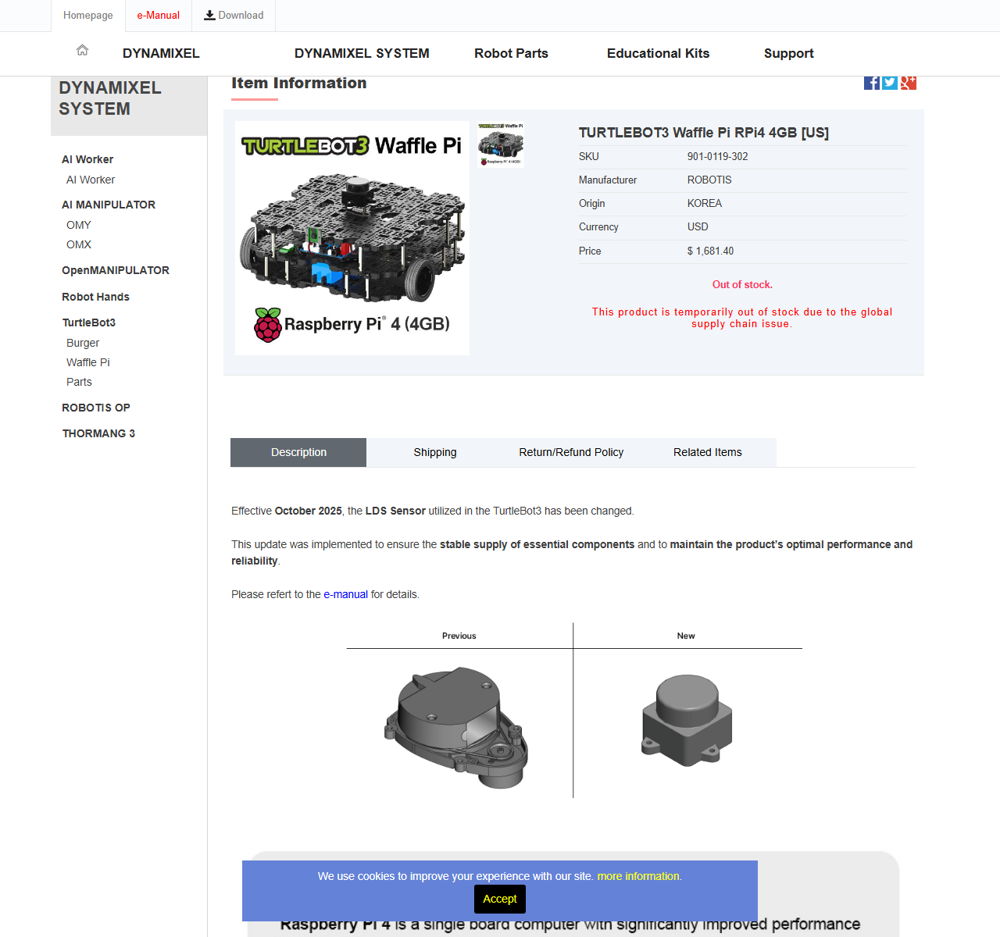
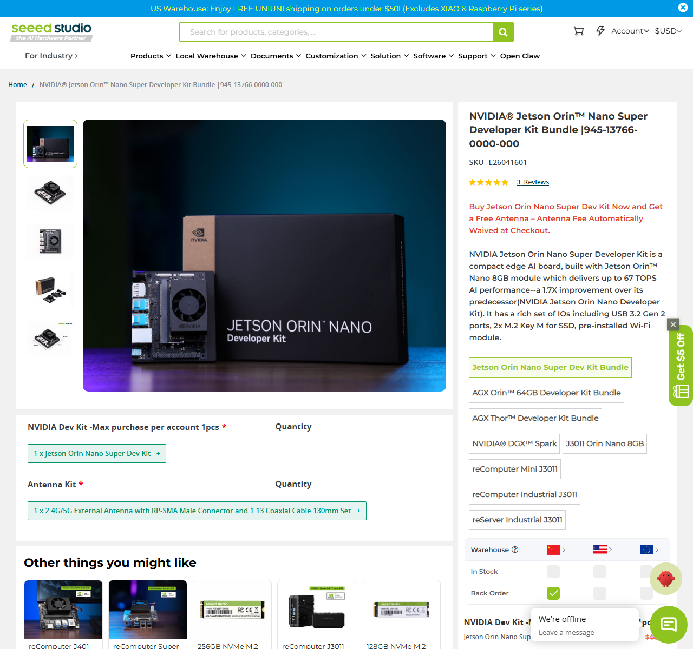
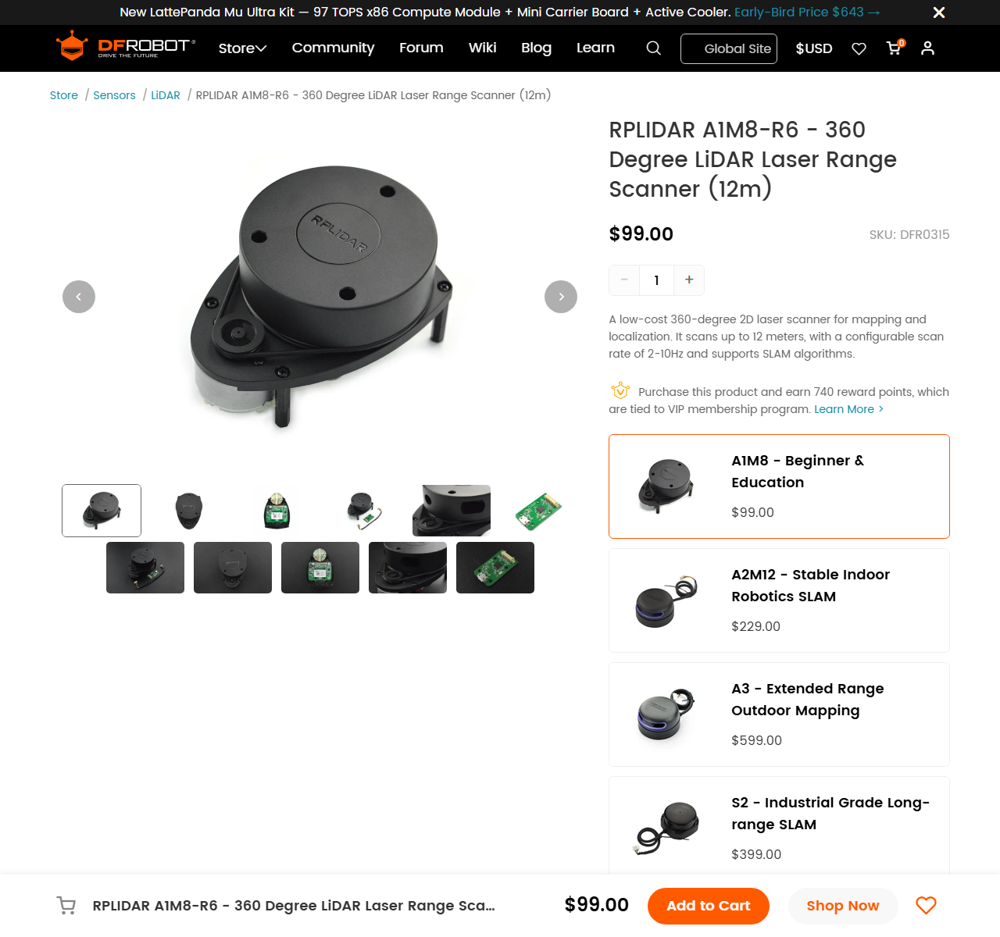
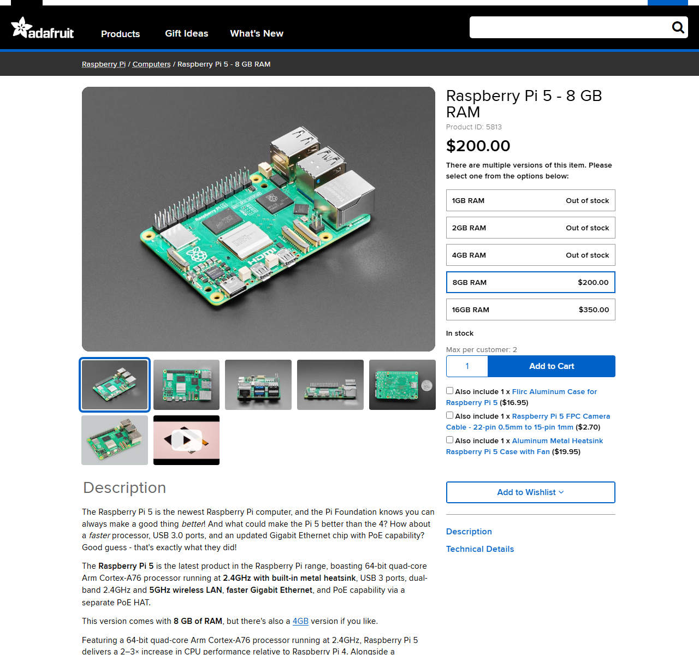
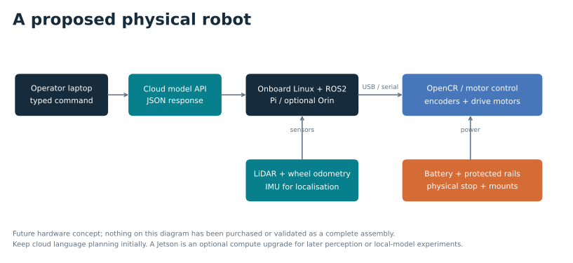

{kind=link}

ROBOTIS / 12 Sep 2026
TurtleBot3 Waffle Pi · RPi4 4 GB
$1,681.40 ≈ AED 6,174.94
Complete-platform candidate. The listed SKU was out of stock; confirm the current sensor revision and shipping lead time.
Check supplier listing ↗A procurement study for a later robot build. Start with a platform close to the simulation and keep the model call in the cloud. Add GPU compute when a defined perception or local-inference experiment needs it.

Complete-platform candidate. The listed SKU was out of stock; confirm the current sensor revision and shipping lead time.
Check supplier listing ↗
Optional compute upgrade for future perception or local-model work. This is the captured supplier bundle price, not an old launch MSRP.
Check supplier listing ↗
Standalone sensor candidate for a custom chassis. Do not add it to a complete TurtleBot kit that already includes a scanner.
Check supplier listing ↗
Alternative computer for a future custom build. A Pi 5 is not a necessary extra purchase for the Pi-equipped TurtleBot kit.
Check supplier listing ↗Screenshots belong to the named vendors and are included for attributed comparison. Capture provenance →
Use the Waffle Pi kit's computer and keep the same cloud-planning architecture. Avoid buying a second computer and scanner at the start. This is a closer platform match, not a claim that it is the cheapest robot available.
USD 1,781–1,931
≈ AED 6,542–7,093 before excluded costs
Listed kit: $1,681.40. Add a clearly unquoted $100–250 engineering allowance for mounts, spare leads, storage needs and a suitable stop/power arrangement. Inventory the supplied kit before finalising the allowance.
Add the Jetson Orin Nano Super bundle for a later GPU-based experiment. Mounting, regulated power and software bring-up require engineering; this combination has not been validated here.
USD 2,382–2,742
≈ AED 8,747–10,069 before excluded costs
Kit + observed Jetson bundle: $2,131.70. Common allowance: $100–250. Extra storage, power conversion and mounting allowance: $150–360. Allowances are estimates, not supplier quotes.
gpt-4o-mini through an API. Installing a Jetson does not move that model onto the robot. A local model would be a new experimental condition requiring new measurements.| Function | Kit-based plan | Engineering check before ordering |
|---|---|---|
| Drive base and feedback | Kit chassis, wheels and DYNAMIXEL drive actuators | Check payload, wheel odometry calibration and mounting clearance; a kit is not a validated warehouse vehicle. |
| Motor interface | OpenCR controller supplied with the platform | Match firmware, USB/serial permissions, motor IDs and ROS interface. |
| Range sensing | Kit laser scanner; exact revision to confirm | ROBOTIS notes an October 2025 sensor change. Select the driver for the shipped unit. The $99 RPLIDAR is an alternative, not an assumed kit component. |
| Orientation and odometry | Platform IMU and wheel feedback | Characterise calibration, time stamps, frame alignment and noise before sensor fusion. |
| Main computer | Included Raspberry Pi; optional Orin upgrade | Choose OS/ROS versions together. Orin and the original Jetson Nano are different platforms. |
| Power | Confirm battery and charger in the exact kit inventory | For added compute, size a protected regulated rail for peak load. Verify connectors, polarity, fusing and accessible motor stop. Do not assume a developer kit plugs directly into the robot battery. |
| Storage, cabling and structure | Purchase only what the delivered kit lacks | Storage endurance, USB strain relief, cable routing, rigid sensor mounts and cooling clearance. |
| Optional camera | Defer for the present navigation-only scope | Add only with a defined perception question, supported driver and measured power/bandwidth budget. |
Platform component reference: ROBOTIS TurtleBot3 documentation. This is a procurement checklist, not a tested assembly or electrical wiring design.
The recorded study uses ROS2 Humble, Ubuntu 22.04 and Gazebo Classic 11. Preserve those versions for replay. A simulator migration should be a separate change with fresh validation.
For Orin, JetPack 6.2.1 documents an Ubuntu 22.04 base and Orin support. It is a candidate compatibility path, not a verified installation on this robot.
A physical robot needs wheel/sensor feedback and a localisation strategy. Map creation with SLAM Toolbox, localisation on a saved map with AMCL, and optional IMU/odometry fusion are future integration choices. The dissertation's scripted map and static transform do not establish real-world localisation.
Candidate source projects: SLAM Toolbox, Nav2 / AMCL, robot_localization. Pin compatible versions and test them together.

These are proposed validation stages. No physical-robot results are claimed in this repository.
Download the quoted-component cost table (CSV) ↓{kind=link}
{kind=link}
{kind=link}